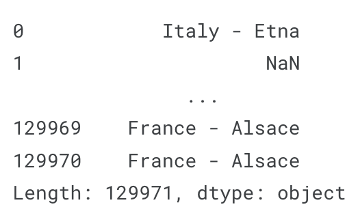

Pandas
Creating, Reading and Writing
# Your code goes here. Create a dataframe matching the above diagram and assign it to the variable fruits.
fruits = pd.DataFrame({'Apples': [30], 'Bananas': [21]})
# Check your answer
q1.check()
fruits# Your code goes here. Create a dataframe matching the above diagram and assign it to the variable fruit_sales.
fruit_sales = pd.DataFrame({'Apples': [35, 41], 'Bananas': [21, 34]}, index=['2017 Sales', '2018 Sales'])
# Check your answer
q2.check()
fruit_salesingredients = pd.Series({'Flour': '4 cups', 'Milk': '1 cup', 'Eggs': '2 large', 'Spam': '1 can'}, name='Dinner')
# Check your answer
q3.check()
ingredientsreviews = pd.read_csv('../input/wine-reviews/winemag-data_first150k.csv', index_col=0)
# Check your answer
q4.check()
reviewsanimals = pd.DataFrame({'Cows': [12, 20], 'Goats': [22, 19]}, index=['Year 1', 'Year 2'])
animalsIndexing, Selecting & Assigning
The first is index-based selection: selecting data based on its numerical position in the data. iloc follows this paradigm.
reviews.iloc[0]The second paradigm for attribute selection is the one followed by the loc operator: label-based selection.
reviews.loc[0, 'country']Manipulating the index
reviews.set_index("title")Conditional selection
reviews.loc[reviews.country == 'Italy']reviews.loc[reviews.country.isin(['Italy', 'France'])]The second is isnull (and its companion notnull). These methods let you highlight values which are (or are not) empty (NaN). For example, to filter out wines lacking a price tag in the dataset, here’s what we would do:
reviews.loc[reviews.price.notnull()]# Your code here
desc = reviews['description']
# Check your answer
q1.check()first_description = reviews['description'][0]
# Check your answer
q2.check()
first_descriptionfirst_row = reviews.iloc[0]
# Check your answer
q3.check()
first_rowfirst_descriptions = reviews['description'].iloc[0:10]
# Check your answer
q4.check()
first_descriptionssample_reviews = reviews.iloc[[1, 2, 3, 5, 8]]
# Check your answer
q5.check()
sample_reviewsdf = reviews[['country', 'province', 'region_1', 'region_2']].iloc[[0, 1, 10, 100]]
# Check your answer
q6.check()
dfdf = reviews[['country', 'variety']].iloc[0:100]
# Check your answer
q7.check()
dfitalian_wines = reviews[reviews['country'] == 'Italy']
# Check your answer
q8.check()top_oceania_wines = reviews[(reviews['points'] >= 95) & ((reviews['country'] == 'Australia') | (reviews['country'] == 'New Zealand'))]
# Check your answer
q9.check()
top_oceania_winesSummary Functions and Maps
reviews.country + " - " + reviews.region_1
median_points = reviews['points'].median()
# Check your answer
q1.check()countries = reviews['country'].unique()
# Check your answer
q2.check()reviews_per_country = reviews['country'].value_counts()
# Check your answer
q3.check()centered_price = reviews['price'] - reviews['price'].mean()
# Check your answer
q4.check()reviews['points_to_price'] = reviews['points'] / reviews['price']
bargain_wine = reviews['title'].iloc[reviews['points_to_price'].idxmax()]
# Check your answer
q5.check()descriptor_counts = pd.Series([reviews['description'].map(lambda x: 'tropical' in x).sum(), reviews['description'].map(lambda x: 'fruity' in x).sum()], index=['tropical', 'fruity'])
# descriptor_counts
# Check your answer
q6.check()def rating_stars(row):
if (row['points'] > 95) | (row['country'] == 'Canada'):
row['star_ratings'] = 3
elif 95 >= row['points'] >= 85:
row['star_ratings'] = 2
else:
row['star_ratings'] = 1
return row
star_ratings = reviews.apply(rating_stars, axis='columns')['star_ratings']
# Check your answer
q7.check()Grouping and Sorting
reviews.groupby('points').points.count()
reviews.groupby('points').price.min()
reviews.groupby('winery').apply(lambda df: df.title.iloc[0])
reviews.groupby(['country', 'province']).apply(lambda df: df.loc[df.points.idxmax()])
reviews.groupby(['country']).price.agg([len, min, max])
countries_reviewed = reviews.groupby(['country', 'province']).description.agg([len])
countries_reviewed
mi = countries_reviewed.index
type(mi)
countries_reviewed.reset_index()
countries_reviewed = countries_reviewed.reset_index()
countries_reviewed.sort_values(by='len')
countries_reviewed.sort_values(by='len', ascending=False)
countries_reviewed.sort_index()
countries_reviewed.sort_values(by=['country', 'len'])
# Your code here
reviews_written = reviews.groupby('taster_twitter_handle')['taster_twitter_handle'].count()
# Check your answer
q1.check()best_rating_per_price = reviews.groupby('price')['points'].max().sort_index()
# Check your answer
q2.check()price_extremes = reviews.groupby('variety')['price'].agg([min, max])
# Check your answer
q3.check()sorted_varieties = reviews.groupby('variety')['price'].agg([min, max]).sort_values(['min', 'max'], ascending=False)
# Check your answer
q4.check()reviewer_mean_ratings = reviews.groupby('taster_name')['points'].mean()
# Check your answer
q5.check()country_variety_counts = reviews.groupby(['country', 'variety']).size().sort_values(ascending=False)
# Check your answer
q6.check()Data Types and Missing Values
reviews.price.dtypereviews.dtypesreviews.points.astype('float64')reviews.index.dtypeEntries missing values are given the value NaN, short for “Not a Number”. For technical reasons these NaN values are always of the float64 dtype.
reviews[pd.isnull(reviews.country)]
reviews.region_2.fillna("Unknown")
reviews.taster_twitter_handle.replace("@kerinokeefe", "@kerino")
# Your code here
dtype = reviews['points'].dtype
# Check your answer
q1.check()point_strings = reviews['points'].astype(str)
# Check your answer
q2.check()len(reviews[pd.isnull(reviews['price'])])n_missing_prices = len(reviews[pd.isnull(reviews['price'])])
# Check your answer
q3.check()reviews_per_region = reviews['region_1'].fillna('Unknown').value_counts().sort_values(ascending=False)
# Check your answer
q4.check()Renaming and Combining
reviews.rename(columns={'points': 'score'})reviews.rename(index={0: 'firstEntry', 1: 'secondEntry'})reviews.rename_axis("wines", axis='rows').rename_axis("fields", axis='columns')canadian_youtube = pd.read_csv("../input/youtube-new/CAvideos.csv")
british_youtube = pd.read_csv("../input/youtube-new/GBvideos.csv")
pd.concat([canadian_youtube, british_youtube])left = canadian_youtube.set_index(['title', 'trending_date'])
right = british_youtube.set_index(['title', 'trending_date'])
left.join(right, lsuffix='_CAN', rsuffix='_UK')?pd.DataFrame.joinSignature:
pd.DataFrame.join(
self,
other: 'FrameOrSeriesUnion',
on: 'IndexLabel | None' = None,
how: 'str' = 'left',
lsuffix: 'str' = '',
rsuffix: 'str' = '',
sort: 'bool' = False,
) -> 'DataFrame'
Docstring:
Join columns of another DataFrame.
Join columns with `other` DataFrame either on index or on a key
column. Efficiently join multiple DataFrame objects by index at once by
passing a list.
Parameters
----------
other : DataFrame, Series, or list of DataFrame
Index should be similar to one of the columns in this one. If a
Series is passed, its name attribute must be set, and that will be
used as the column name in the resulting joined DataFrame.
on : str, list of str, or array-like, optional
Column or index level name(s) in the caller to join on the index
in `other`, otherwise joins index-on-index. If multiple
values given, the `other` DataFrame must have a MultiIndex. Can
pass an array as the join key if it is not already contained in
the calling DataFrame. Like an Excel VLOOKUP operation.
how : {'left', 'right', 'outer', 'inner'}, default 'left'
How to handle the operation of the two objects.
* left: use calling frame's index (or column if on is specified)
* right: use `other`'s index.
* outer: form union of calling frame's index (or column if on is
specified) with `other`'s index, and sort it.
lexicographically.
* inner: form intersection of calling frame's index (or column if
on is specified) with `other`'s index, preserving the order
of the calling's one.
lsuffix : str, default ''
Suffix to use from left frame's overlapping columns.
rsuffix : str, default ''
Suffix to use from right frame's overlapping columns.
sort : bool, default False
Order result DataFrame lexicographically by the join key. If False,
the order of the join key depends on the join type (how keyword).
Returns
-------
DataFrame
A dataframe containing columns from both the caller and `other`.
See Also
--------
DataFrame.merge : For column(s)-on-column(s) operations.
Notes
-----
Parameters `on`, `lsuffix`, and `rsuffix` are not supported when
passing a list of `DataFrame` objects.
Support for specifying index levels as the `on` parameter was added
in version 0.23.0.
Examples
--------
>>> df = pd.DataFrame({'key': ['K0', 'K1', 'K2', 'K3', 'K4', 'K5'],
... 'A': ['A0', 'A1', 'A2', 'A3', 'A4', 'A5']})
>>> df
key A
0 K0 A0
1 K1 A1
2 K2 A2
3 K3 A3
4 K4 A4
5 K5 A5
>>> other = pd.DataFrame({'key': ['K0', 'K1', 'K2'],
... 'B': ['B0', 'B1', 'B2']})
>>> other
key B
0 K0 B0
1 K1 B1
2 K2 B2
Join DataFrames using their indexes.
>>> df.join(other, lsuffix='_caller', rsuffix='_other')
key_caller A key_other B
0 K0 A0 K0 B0
1 K1 A1 K1 B1
2 K2 A2 K2 B2
3 K3 A3 NaN NaN
4 K4 A4 NaN NaN
5 K5 A5 NaN NaN
If we want to join using the key columns, we need to set key to be
the index in both `df` and `other`. The joined DataFrame will have
key as its index.
>>> df.set_index('key').join(other.set_index('key'))
A B
key
K0 A0 B0
K1 A1 B1
K2 A2 B2
K3 A3 NaN
K4 A4 NaN
K5 A5 NaN
Another option to join using the key columns is to use the `on`
parameter. DataFrame.join always uses `other`'s index but we can use
any column in `df`. This method preserves the original DataFrame's
index in the result.
>>> df.join(other.set_index('key'), on='key')
key A B
0 K0 A0 B0
1 K1 A1 B1
2 K2 A2 B2
3 K3 A3 NaN
4 K4 A4 NaN
5 K5 A5 NaN
File: /opt/conda/lib/python3.7/site-packages/pandas/core/frame.py
Type: functionpowerlifting_combined = powerlifting_meets.set_index('MeetID').join(powerlifting_competitors.set_index('MeetID'), on='MeetID')
# Check your answer
q4.check()